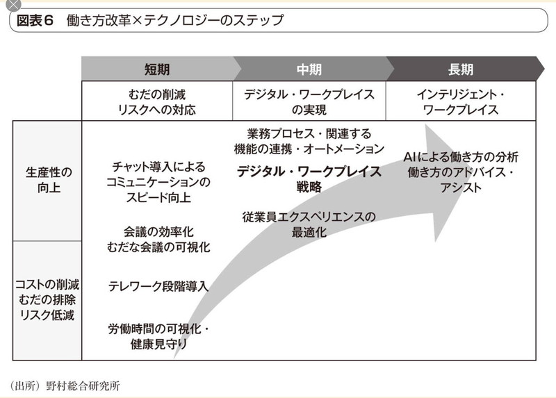
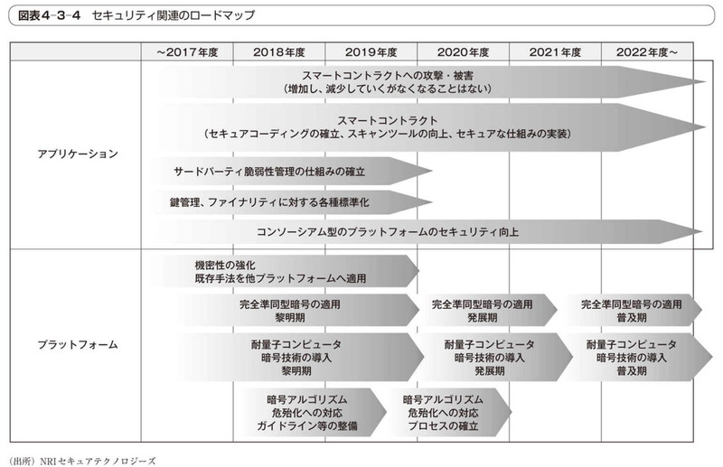

- Sec01-08-2 専門員の職務内容詳細
- 改版履歴
- 【2018年10月24日】業務概要明確化
- 【2018年10月11日】「情報収集・整理・蓄積と発信」のイメージ図を最終ページに移動
- 【2018年6月6日】係会議資料として提出
 専門員の所掌業務の概要
専門員の所掌業務の概要- 基本姿勢
- 専門員の所掌事務を具体的な業務として目標を設定し、その目標の達成を目指す
- ITおよびセキュリティの最新動向を把握して、専門員としてのスキル、知識の維持・向上を図る（スキル・知識を陳腐化させない）
- 公務員倫理、職業倫理に沿った行動で、専門員としてのモチベーションを維持する
 （１） サイバーセキュリティに関する中小企業からの相談対応（窓口・電話・メールなど）及び相談記録作成⇒【受付業務】
（１） サイバーセキュリティに関する中小企業からの相談対応（窓口・電話・メールなど）及び相談記録作成⇒【受付業務】 一次対応（フロンドエンド）と二次対応（バックオフィス）業務の明文化と認知
一次対応（フロンドエンド）と二次対応（バックオフィス）業務の明文化と認知
- （２） サイバーセキュリティに関する中小企業支援施策の実施に関する業務（※普及啓発セミナーの運営、事例集作成等）⇒【情報発信】
- プレゼン用マスタースライド及び解説文を事前作成及び改訂
- FAQの作成・更新
- 出張相談・個別助言
- （３） 課長級、課長代理級からの指示に基づく各種資料作成業務⇒【情報収集・整理・蓄積】
- ガイドブック内容の詳細化、最新化
 ガイドブック内容解説資料の作成
ガイドブック内容解説資料の作成- ガイドブックで改訂すべき事項があれば、改訂内容の調査と内容案の作成
- 各機関が提供している情報のポイントを、事前調査資料として作成及び改訂
- 日々のセキュリティ関連の文献、Webサイト情報のURL収集、内容要約作成及び蓄積
- 次世代IT技術及びサイバーセキュリティに関する実践的なノウハウ・知識の報告書
- 自習
- セミナー等での情報収集
- 関係機関との情報交換
- 警視庁、IPA、TCYSSメンバー組織
- Web掲載用情報の作成
- TCYSS内WG等の参考資料作成
- （４） その他付随する業務
- ガイドブック送付依頼受付及び発送
- 会議等設営準備
- 係内庶務
- 専門員の行動規範
- 公務員倫理に沿った行動
- 東京都コンプライアンスに沿った行動
- 相談対応の回答レベルの向上に努める
- 日常での情報収集、整理
- 相談対応の回答内容の均質化を目指す
- 専門員の知識・ノウハウの形式知化（ドキュメント化）
- ドキュメントによる情報の共有とノウハウの蓄積
- 専門員の交代時の引き継ぎの円滑化を図る
- ドキュメントによる引き継ぎ
- 専門員の所掌業務の詳細内容
- （１） サイバーセキュリティに関する中小企業からの相談対応（窓口・電話・メールなど）及び相談記録作成
- （相談対応の質の向上、均質化）
- 電話
- 方針
- 一次対応担当（フロントエンド）、二次対応担当（バックオフィス）の創設
- 一次対応は、日常のルーティンワーク（定型業務）
- 一次対応担当が受付け、調整の必要度を判断し、二次対応担当へディスパッチ。二次対応担当が回答する。
- 一次対応担当は、簡易な回答もしくは二次対応へのディスパッチ
- 簡易な相談は、一次対応担当が回答。複合的な内容、技術的な案件は、相談のカテゴリを確認し、二次対応担当へ引継ぎ。
- ディスパッチに必要な最低限の情報を担当内で共有
- 緊急：セキュリティ侵害発生
- 法律違反の可能性
- 法律相談
- 緊急：システム障害
- 事前予防対策
- 対策全般（啓発関連）
- 生活安全関連
- 法律違反の可能性がある場合は警視庁に
- あらかじめ、事象と適用法規条文をマニュアル化しておく
- セキュリティ関連外
- ガイドブック送付依頼
- 具体的な対応策は即答せず、一旦電話を保留。二次対応担当での調査に時間が掛かりそうな場合は、再度かけ直しをお願いする
- 二次対応担当は、回答案の作成
- 状況把握
- 具体的な対応策検討
- FAQ、ガイドブック、事前調査資料、最新ウェブ情報に基づいて検討
- 法律に違反する可能性がある場合は、警視庁に問い合せ
- 必要に応じてIPAに問い合わせ
- 可能であれば、TCYSSメンバーに確認
- 回答案
- 基本は具体的な対応策を提示できる専門機関へナビゲート
- 対策の概念、簡易な処置を列挙
- 「相談・届出先クイックリスト」を参考に具体的に相談を受けてくれそうな機関を列挙
- 二次対応担当は相談者に回答
- ①具体的な解決策
- ②相談を受けてくれそうな機関を紹介
- 相談内容記録
- Webフォームでの相談受付、メールでの回答
- Webフォームに申請があった時の通知メールの確認
- （※今後HP内に受理フォームを検討）
- 以下の手順は、電話相談に準ずる
- 窓口対応
- ガイドブックに記載の内容をベースに詳細な解説が求められた場合
- 相談対応者、書記役の2名で対応
- （２） サイバーセキュリティに関する中小企業支援施策の実施に関する業務（※普及啓発セミナーの運営、事例集作成等）
- 【情報発信】（啓発資料の作成及び普及啓発活動の実施）
- プレゼン用マスタースライド及び解説文を事前作成及び改訂
- 【例】ガイドブック内容詳細解説
- 【例】Society5.0時代に必要なセキュリティ対策
- 【例】ECサイトの構築・運営におけるセキュリティ対策
- 【例】BCPにおけるセキュリティ対策
-
- 過去の相談記録、ガイドブック、事前調査資料等に基づいて、内容を分類して汎化したQ＆Aを作成し、相談用手元資料とする【相談回答の均質化】
- Q&A項目：分類（キーワード）、質問例、回答例（対応策、ナビゲーション先）、参考にした情報、質問者に参考になる情報の所在場所
-
- FAQ分類（ガイドブック項立てに沿った分類）
- ケース別の事故対応の流れに沿った対応例
- 情報システムの障害（利用不能、データ喪失 等）
- 情報システムへの攻撃（ウィルス感染、不正アクセス、改ざん 等）
- 情報漏えい（可能性も含む）
- 汎化した内容をWebで公開
- 出張相談・個別助言
- 都支援事業等でのプレゼンテーションおよび個別相談対応
- ガイドブックを読了後、より詳細な解説及び助言を求める組織向け
- 警視庁が行うセミナーとは棲み分け
- （３） 課長級、課長代理級からの指示に基づく各種資料作成業務
- 【情報収集・整理・蓄積】【予測調査】（専門員としてのスキル、知識の習得と蓄積）
- ガイドブック内容の詳細化、最新化
- ガイドブック内容解説資料の作成
- 「サイバーセキュリティ対策ガイドブック解説書【Web用詳細版】」（Sec01-01）を参照
- ガイドブックで改訂すべき事項があれば、改訂内容の調査と内容案の作成
- 「サイバーセキュリティ経営ガイドライン」の改定対応
- 「サイバーセキュリティ経営ガイドライン」Ver2.0の重要10項目の分類及び内容の改訂に伴う記述の加筆訂正
- ガイドライン改訂前の主な課題
- 昨今のサイバー攻撃の巧妙化により入口出口対策などの事前対策だけでは対処が困難。
- 米国のサイバーセキュリティフレームワークでも事前対策だけでなく、事後（検知、対応、復旧）対策を要求。
- 一方で従来のガイドラインはCSIRTの構築などの「対応」に関する項目はあるものの、「検知」や「復旧」に関する内容が弱く、国際的な状況を踏まえるとガイドラインとの整合性が不十分。
-
- 重要１０項目の整理
- 新規に２項目（(5)対策実施と(8)復旧）追加するとともに、既存の項目を再整理。
- 重要１０項目の並びについても、３原則、及び作業の時系列を意識して再整理。
- (7)の参考資料として付録C「インシデント発生時に組織内で整理しておくべき事項」を新規に追加。
- 事後対策の強化 ～検知・復旧対策の実施～
- 重要項目 指示5として「攻撃の検知」に関する、「サイバーセキュリティリスクに対応するための仕組みの構築」を追加
- 重要項目 指示8 として「復旧」に関する、「サイバーセキュリティリスクに対応するための仕組みの構築」を追加
- サプライチェーン対策の強化
- 重要項目 指示9の「サプライチェーンのビジネスパートナーや委託先等を含めたサイバーセキュリティ対策の実施及び状況把握」において、委託先におけるリスクマネーの確保や委託先の組織としての活用の把握（ISMSやSECURITY ACTION）等の留意点を追記
- セキュリティ要件を満たさない事業者、製品、サービスはグローバルサプライチェーン、国内サプライチェーンからはじき出されるおそれ
- 事後対策の強化 ～インシデント発生時の対応～
- インシデント発生時に組織として調査しておくべき事項をまとめた付録Cを追加
- その他の改訂ポイント
- ＜NISTのサイバーセキュリティフレーワークとの対応関係の提示＞
- 付録Aの各チェック項目について、NISTのサイバーセキュリティフレームワークと対応する項目を提示。
- ＜冒頭の説明の見直し＞
- 「サイバーセキュリティ経営ガイドライン・概要＞の説明を全体的に修正。
- IoTやAIの活用といった最近の情勢をふまえるとともに、サプライチェーンセキュリティの必要性が高まっていることや、セキュリティ対策を怠ると他社に迷惑をかけることもある等についても言及。
- ＜統計データのアップデート＞
- １．１節「サイバーセキュリティ経営ガイドラインの背景と位置づけ」で参照している統計データをアップデート。それに伴い説明文も修正。
- ＜情報共有活動における情報提供の記載を強調＞
- 重要１０項目の（１０）において、従来は「情報の入手とその有効活用」となっていた部分を「情報の提供、及び入手とその有効活用」に修正。
- ＜その他＞
- 経営者、CISOを対象読者としていることから、冗長な表現を見直し、全体の記載を簡素化。
- 「サイバーセキュリティ経営ガイドライン」Ver2.0 付録Ａ サイバーセキュリティ経営チェックシートの内容の反映
- 本チェック項目とNISTが提供するサイバーセキュリティフレームワーク10との対応関係も合わせて提示されている
- ISMS以外の文書も参照（NIST, EU等の文書）
-
- CSF フレームワークコア
- ID 特定
- PR 防御
- DE 検知
- RS 対応
- RC 復旧
- NIST SP 800-63 (電子的認証に関するガイドライン)に対応した認証方式の適用について加筆
- 「パスワードは定期変更すべき」「パスワードは複数の」文字種で混成すべき」などの、従来は常識とされてきた対策についても、実効性や技術の進展に合わせた見直しが図られてる
- パスワードに代わる認証手段として、指紋や顔画面などを活用した生体認証や、認証結果を完全にやりとりできる「FIDO」の普及が期待されている
- NIST SP 800-53 (連邦政府情報システムおよび連邦組織のためのセキュリティ管理策とプライバシー管理策)
- NIST SP 800-61 (コンピュータセキュリティインシデント対応ガイド)
- CSC20 （効果的なサイバー防御のための重要なセキュリティコントロール）
- NIST SP.800-82R2 Guide to Industrial Control Systems (ICS) Security
- 関連法規
- セキュリティ事象に関連する法規の内容要約、事象毎に適用の可能性のある法律名、条文を整理する
- ガイドブックのMission1-1～13を例に適用が想定される法律名、条文を例示
- 不正競争防止法、、、個人情報保護法、、、
- GDPR対応
- GDPR（General Data Protection Regulation：一般データ保護規則）に対応した個人情報情報保護策について記述
- サイバーセキュリティ脅威のトレンド対応
- なりすましECサイトの被害と回避策の記述の充実
- 事業者サイド
- なりすましECサイト対策マニュアル【2015年3月一般社団法人セーファーインターネット協会】
- 利用者サイド
- ビジネスメール詐欺の被害と回避策の記述の充実
- 働き方改革関連
- 生産性向上のための「デジタル・ワークプレイス」
- デジタル化時代のデバイスやテクノロジーを駆使して、働くプロセスや場所・コミュニケーション、コラボレーションのあり方を新たに組み立てようとする考え方
 デジタル・ワークプレイスの全体像
デジタル・ワークプレイスの全体像
- 業務の最適化
- 業務の一貫した流れ
- 業務の最適化を図り、アプトプットの両・質の向上やビジネスを迅速に進めていくためには、一般して業務をつなげていくという考え方でそれぞれの要素を連携させていく必要がある
- 図表5 API連携による仕事の一貫した流れの実現イメージ
- 従業員エクスペリエンスを向上するシステムの連携
- 従業員にとって、いつでもどこでも柔軟な働き方ができるインフラやアプリケーションが一貫して提供されることで、仕事をする上での利便性やユーザビリティが向上する
- テレワークソリューション
-
- システム方式
- リモートデスクトップ
- 仮想デスクトップ
- クラウド型アプリ
- 会社ＰＣ持ち帰り
- 端末デバイス
- リッチクライアント
- シンクライアント
- タブレット型PC
- スマートフォン
- 携帯電話
- セキュリティ
- 本人認証
- 端末認証
- 端末管理
- 暗号化通信
- ストレージ暗号化
- テレワークセキュリティガイドライン（第4版）【2018年4月総務省】
- 私用端末のビジネス利用
-
- AIが人間をアシストする「インテリジェント・ワークプレイス」
- AIが従業員の能力を補い、人間が気づかない部分をコンピュータがアシストすることが可能になりつつある
- 働き方改革xテクノロジーのステップ
- 
- Society5.0時代に必要なセキュリティ対策
- ディープラーニング、ロボット、ビッグデータ、IoT、クラウドサービス等の技術の活用の必要性と、活用におけるセキュリティ対策の記述の充実
- IoT関連
- NIST SP.800-82R2 Guide to Industrial Control Systems (ICS) Security 【再掲】
- IoTセキュリティ 標準／ガイドライン ハンドブック 2017年度版【2018年5月8日JNSA】
- コンシューマ向けIoTセキュリティガイド【2016年8月1日JNSA】
- APIセキュリティ
- ブロックチェーンにおけるセキュリティ
- 
- サイバーセキュリティ分野で機械学習が活用される背景と期待
- サイバーセキュリティ分野で機械学習が活用される背景
- 従来型サイバーセキュリティ対策の限界
- 機械学習への期待
- マルウェア検知への応用
- ネットワーク異常検知への応用
- ソースコードレビューへの応用
- セキュリティ監視の運用支援への応用
- 機械学習を活用する上で押さえるべきポイント
- 誤検知の可能性が避けられない
- 判定結果の分析が困難である
- 全てに万能な機械学習アルゴリズムは存在しない
- インターネットアクセスにおけるセキュリティの新技術
- 各機関が提供している情報のポイントを、事前調査資料として作成及び改訂
- 「サイバーセキュリティ関連各種ガイドブックの内容要約」（Sec01-02）を参照
- 日々のセキュリティ関連の文献、Webサイト情報の収集（ブックマーク）、内容要約作成及び蓄積
- 「サイバーセキュリティ担当による情報収集・整理・蓄積・提供」（Sec01-06）を参照
- 次世代IT技術及びサイバーセキュリティに関する実践的なノウハウ・知識の報告書
- 次世代IT技術及びサイバーセキュリティに関して体系的なノウハウ・知識を、自習、セミナーを通じて取得
- 相談対応で得た知見も含めて、成果を、報告書として取り纏める
- 自習
- 情報処理技術者試験レベルの知識の習得
- ITストラテジスト試験
- 情報処理安全確保支援士試験
- 応用情報技術者試験
- 情報セキュリティマネジメント試験
- システム開発・運用の新技術等の習得
- プログラミング言語
- Python
- Java
- 各種機械学習モジュールのAPI利用
- ・・・
- Webサービス試用
- 相談者の実利用環境の把握
- 関連機関のサービスの把握
- セミナー等での情報収集
- サイバーセキュリティセミナー
- 次世代IT技術セミナー
- 新技術・新製品紹介展示会
- 関係機関との情報交換
- セキュリティ関連機関と定期的に情報交流の場を設ける
- ユーザ側である中小企業支援団体との事例等の学習の機会を設ける
- Web掲載用情報の作成
- 相談窓口及び関係機関が提供するFAQ及び詳細情報リンク先等
- 他機関が提供する中小企業向け情報の紹介・リンク先、リンク先情報要約等
- TCYSS内WG等の参考資料作成
- 全員
- （４） その他付随する業務
- ガイドブック送付依頼受付及び発送
- 会議等設営準備
- 係内庶務
-
- TCYSSでの情報収集・整理・蓄積と発信